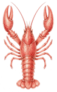
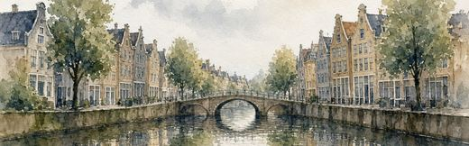
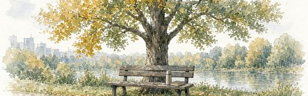

Lobsy
DNA-paspoort · student
Nog niet compleet
1 van 4 DNA-tests afgerond
geen
naam
DNA-paspoort · hoger onderwijs
Student LB-54470
Samenwerken in team
Hbo Verpleegkunde · jaar 3
Stage sep–dec 2026
Utrecht
Paspoortnr. LB-54470
In mijn eigen woorden
Nog niets geschreven.
Vervoer
max. 25 min reizen
Beschikbaarheid, diensten en talen nog niet ingevuld.
Sterke punten
Zelfinzicht uit een afgeronde test · 30 sep 2026
Samenwerken in team.
Uit de afgeronde competentietest.
Stages en bijbanen die bij mij passen
Nog geen passende stage of bijbaan binnen jouw leeftijd en regels. Vul je profiel aan of kom later terug.
Ervaring en papieren
Nog geen werkervaring of certificaten toegevoegd.
Opleiding
Hbo Verpleegkunde
Jaar 3
Sector die bij mij past
Mijn eerste keus
Zorg & welzijn
Mensgericht en zorgzaam
Waarom het bij mij past
Past bij functie: Stage verpleegkunde
Samenwerken in team, uit de competentietest
Voorbeeldfuncties
Stage verpleegkunde
Wat betekent “Lobsy-geverifieerd”?
Gecontroleerd door Lobsy
DNA-tests (1 van 4)
Paspoort-inhoud = live-versie op de QR-datum
Niet gecontroleerd
Identiteit en werkvergunning
Echtheid van diploma's en certificaten
Referenties van vorige werkgevers
Mijn DNA in 4 lagen
Mijn scharen
Competenties
Samenwerken in team
✓ afgerond 30 sep 2026

Mijn antennes
Loopbaan
Deze test is nog niet gedaan.
Nog open

Mijn rots
Werkcultuur
Deze test is nog niet gedaan.
Nog open
Mijn kompas
Waarden
Deze test is nog niet gedaan.
Nog open
Om te bespreken met je stagebegeleider
Volgende stap
Rond de andere 3 DNA-tests af. Dan vult dit paspoort zich verder.
Vul je beschikbaarheid, diensten en talen in.
Voeg stages, bijbanen of certificaten toe.
Kies zelf of je naam op het paspoort komt.